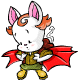

NeoQuest: Non-Player Characters
Non-Player characters are those characters that you can't play as - they mainly talk or trade with you, or give quests.
|  | Rikti Dank Cave Level 2 (View Map) It's Xantan-cast-a-spell-on-me story time! Abilities: talk, quest |
| Conversation | |
| You say, "What are you doing here?" Rikti says, "I was once an adventurer, like yourself, long ago... but Xantan discovered me and cast a magic on me that keeps me from leaving this place. I can't even move from this very spot!" You say, "Who is Xantan?" Rikti says, "You don't know who Xantan is? Then what are you doing in here?! Xantan is a powerful wizard... well, not that powerful, but more powerful than me! He lives at the bottom of this dungeon, and has for hundreds of years at least. That's all I know about him, and most of it I learned from the deeper denizens of this dungeon." You say, "I have defeated Xantan." Rikti says, "You did? Wha... my goodness! I can move again! I am free! Oh, thank you so much, [name of pet]. I can't tell you what this means to me." You say, "Where are you from?" Rikti says, "I was born in a town to the southwest of here, called Swamp Edge City. It's on the edge of a swamp, you see... The founders weren't very creative, were they? Anyway, that's where I'm from, although I've been stuck here for a while so I haven't been home. It'll be some time before I can get my energy back up, but if you happen to visit Swamp Edge City, stop by and say hello to my brother Mokti, and tell him I'm all right and I'll be home soon!" | |